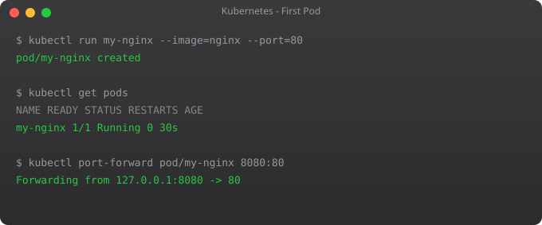

The first time I tried to learn Kubernetes, I made a mistake that probably every beginner makes — I tried to use a cloud cluster. I spun up a managed Kubernetes cluster on AWS EKS, spent three hours figuring out IAM roles, got confused by the networking, and closed the laptop feeling completely defeated. I had not even written a single line of YAML yet.
The right way to start is locally. Minikube gives you a real, fully functional Kubernetes cluster on your own machine. No cloud bills. No complex IAM. No waiting for nodes to spin up. Just you and Kubernetes, one terminal, one command at a time. This is how I actually learned it properly, and this is how we are going to do it in this series.
In this part, we will install kubectl and Minikube, start our first cluster, run our first pod, and understand what is actually happening when we do all of this. By the end of this post, you will have a working local Kubernetes environment and a mental model of how the pieces fit together.
Before installing anything, make sure your machine meets the minimum requirements. Minikube needs at least 2GB of RAM dedicated to it, 2 CPU cores, and 20GB of free disk space. In practice, I recommend 4GB of RAM for a comfortable experience — with only 2GB, the cluster feels sluggish when you are running multiple pods.
You also need a hypervisor or container runtime. On Linux, Docker is the easiest option. On macOS, you can use Docker Desktop or HyperKit. On Windows, Hyper-V or Docker Desktop works well. This tutorial focuses on Linux (Ubuntu 22.04), but the Minikube commands are identical across all platforms — only the installation steps differ.
kubectl is how you talk to any Kubernetes cluster. Think of it as the terminal interface for everything Kubernetes. You will use it to create pods, inspect what is running, view logs, debug issues, apply configurations, and a hundred other things. Install it first.
# Download the latest stable release
curl -LO "https://dl.k8s.io/release/$(curl -L -s https://dl.k8s.io/release/stable.txt)/bin/linux/amd64/kubectl"
# Make it executable
chmod +x kubectl
# Move it to your PATH
sudo mv kubectl /usr/local/bin/
# Verify installation
kubectl version --clientYou should see output showing the kubectl version. The "client" version is your local kubectl — the "server" version will appear once you have a cluster running. If you get a "command not found" error, make sure /usr/local/bin is in your PATH variable.
brew install kubectl
kubectl version --clientchoco install kubernetes-cli
kubectl version --clientMinikube is not just a simulator — it runs a real Kubernetes cluster inside a virtual machine or Docker container on your local machine. When you interact with it using kubectl, you are talking to a genuine Kubernetes API server. Everything you learn here translates directly to production clusters.
# Download Minikube binary
curl -LO https://storage.googleapis.com/minikube/releases/latest/minikube-linux-amd64
# Install it
chmod +x minikube-linux-amd64
sudo mv minikube-linux-amd64 /usr/local/bin/minikube
# Verify
minikube versionbrew install minikubewinget install Kubernetes.minikubeThis is the moment everything becomes real. One command starts a complete Kubernetes cluster on your machine. Minikube will download the necessary images, configure networking, and start the control plane components. The first time takes 3–5 minutes depending on your internet speed. After that, subsequent starts are much faster.
# Start with Docker driver (recommended)
minikube start --driver=docker
# Or with more memory for better performance
minikube start --driver=docker --memory=4096 --cpus=2Watch the output carefully. You will see Minikube downloading the node image, setting up networking, and waiting for the Kubernetes API server to become ready. When you see "Done! kubectl is now configured to use minikube cluster", your cluster is running.
# Check cluster info
kubectl cluster-info
# See the nodes in your cluster
kubectl get nodes
# Check all system pods are running
kubectl get pods -n kube-systemThe output of kubectl get nodes should show one node named "minikube" with status "Ready". The kubectl get pods -n kube-system command shows you the internal Kubernetes components running — things like CoreDNS, the API server, and the scheduler. You do not need to touch these, but it is good to know they exist.
When you ran minikube start, here is what actually happened behind the scenes. Minikube created a virtual machine (or Docker container), installed a minimal Linux distribution inside it, and then started the Kubernetes control plane — which includes the API server, the scheduler, the controller manager, and etcd (the key-value database Kubernetes uses to store all cluster state).
It also configured your local kubectl to point to this cluster by updating the kubeconfig file at ~/.kube/config. This file is how kubectl knows which cluster to talk to and how to authenticate. You can have multiple clusters in this file and switch between them — which is incredibly useful when you eventually work with staging and production clusters.
# See your current context (which cluster kubectl is pointing to)
kubectl config current-context
# List all available contexts
kubectl config get-contexts
# View the full kubeconfig file
kubectl config viewA pod is the smallest deployable unit in Kubernetes. It contains one or more containers that run together on the same node. Let us run a simple nginx web server as our first pod.
# Create a pod running nginx
kubectl run my-nginx --image=nginx --port=80
# Check its status
kubectl get pods
# Get detailed information about the pod
kubectl describe pod my-nginx
# View the logs
kubectl logs my-nginxThe kubectl get pods command will initially show the pod status as "ContainerCreating" while Kubernetes pulls the nginx Docker image. After 30–60 seconds it should show "Running". The kubectl describe pod command gives you a deep look at the pod — which node it is running on, what events happened, what containers are inside, and what resources it is using.
The pod is running inside the Kubernetes cluster, which is inside Minikube, which means it is not directly accessible from your browser yet. There are several ways to access it. The simplest for development is port forwarding.
# Forward local port 8080 to port 80 inside the pod
kubectl port-forward pod/my-nginx 8080:80Now open http://localhost:8080 in your browser. You should see the nginx welcome page — "Welcome to nginx!" This is your first application running on Kubernetes. It feels simple, but the mechanism behind it is the same one used in massive production clusters running thousands of pods.
Press Ctrl+C to stop port forwarding when you are done.
Over time you will use these Minikube commands constantly. Let me save you some searching.
# Check Minikube status
minikube status
# Open the Kubernetes Dashboard in your browser
minikube dashboard
# Get the IP address of your Minikube cluster
minikube ip
# SSH into the Minikube virtual machine
minikube ssh
# Stop the cluster (keeps data)
minikube stop
# Restart the cluster
minikube start
# Completely delete the cluster (fresh start)
minikube delete
# View Minikube logs for debugging
minikube logsThe Minikube Dashboard is particularly useful when you are starting out. It gives you a visual overview of everything running in your cluster — pods, deployments, services, and more. Run minikube dashboard and a browser window will open automatically. I spent a lot of time in this dashboard when I was learning, just exploring and understanding what each resource looked like.
Good practice in Kubernetes is to clean up resources you no longer need. Delete the pod we created:
kubectl delete pod my-nginx
# Verify it's gone
kubectl get podsNotice that when you delete a pod created with kubectl run, it is gone permanently. In Part 3, we will learn about Deployments — which automatically recreate pods when they are deleted. This is the self-healing behavior that makes Kubernetes so powerful in production.
Before we finish Part 2, there is one concept worth introducing: namespaces. Kubernetes uses namespaces to isolate groups of resources within a single cluster. Think of them as folders for your Kubernetes objects.
# List all namespaces
kubectl get namespaces
# List pods in all namespaces
kubectl get pods --all-namespaces
# List pods in a specific namespace
kubectl get pods -n kube-system
# Create your own namespace
kubectl create namespace my-app
# Run a pod in your namespace
kubectl run test-pod --image=nginx -n my-app
# Delete the namespace (deletes everything inside it)
kubectl delete namespace my-appBy default, when you run kubectl commands without specifying a namespace, they operate on the "default" namespace. That is where our nginx pod ran. The "kube-system" namespace is where Kubernetes keeps its own internal components. You should never need to touch that namespace as a beginner.
You now have a working local Kubernetes environment. You installed kubectl, started a Minikube cluster, ran your first pod, accessed it via port forwarding, and learned how to manage the cluster lifecycle. This foundation is everything you need for the rest of the series.
In Part 3, we move from pods to Deployments — the proper, production-grade way to run applications in Kubernetes. You will see how Kubernetes automatically restarts crashed containers, maintains the exact number of replicas you specify, and handles rolling updates without downtime. That is where Kubernetes starts feeling like actual magic.
Minikube runs a single-node Kubernetes cluster on your local machine. You need it because setting up a full cloud cluster just to learn costs money and time. Minikube gives you a real Kubernetes environment on your laptop — free, fast, and safe to experiment with.
Minikube creates and manages the local cluster itself. kubectl is the command-line tool you use to talk to any Kubernetes cluster — including the one Minikube runs. Minikube is the cluster; kubectl is your control panel.
Yes. Minikube works on Windows, macOS, and Linux. On Windows, use Docker Desktop as the driver. The Minikube and kubectl commands are identical once installed — only the initial setup steps differ by OS.
Minimum 2GB, but 4GB is recommended. You can set this when starting: minikube start --memory=4096. With only 2GB, pods may take longer to start and the cluster may feel sluggish under load.
Use minikube stop to pause the cluster — your pods and configurations are preserved. Run minikube start to bring it back exactly as you left it. Only minikube delete wipes everything completely.